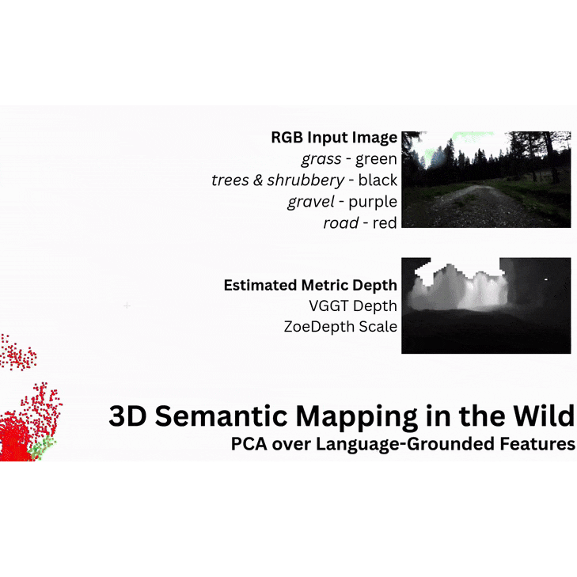
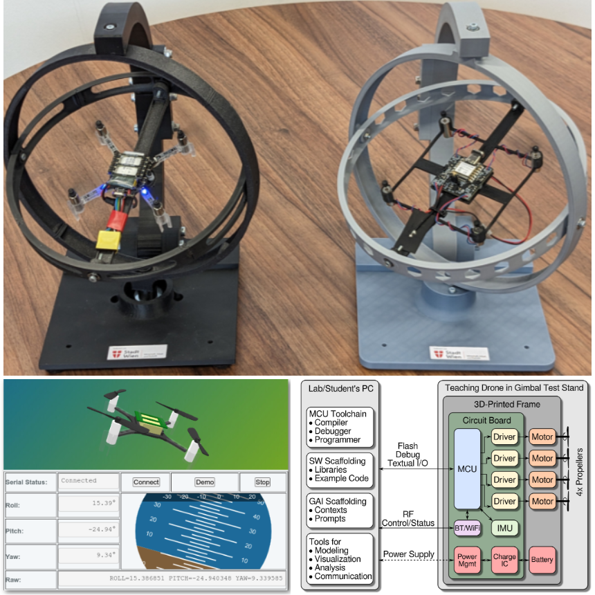
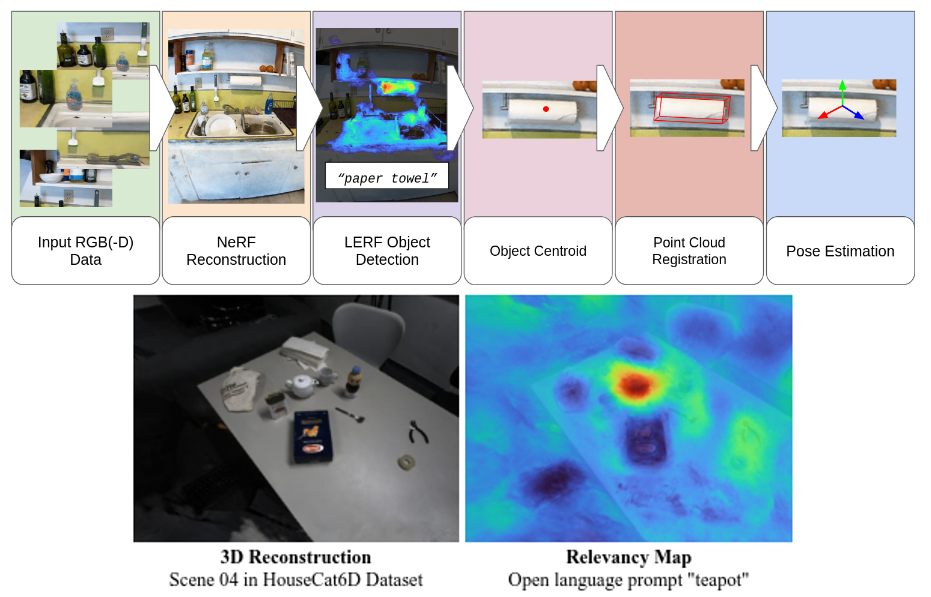

Simon Schwaiger, MSc
I am a Lecturer/Researcher at University of Applied Sciences Technikum Wien and Doctoral Student at Graz University of Technology, working on machine learning and modern control approaches in robotics as well as personal projects.
Publications
|  |
OTAS: Open-vocabulary Token Alignment for Outdoor Segmentation*Simon Schwaiger, Stefan Thalhammer, Wilfried Wöber, Gerald Steinbauer-Wagner Published in ArXiv, 2025 Open-language 2D segmentation and 3D reconstruction for in the wild outdoor robots. |
|  |
Drones in Electronics Engineering and AI-Driven Robotics Courses: Hands-on Lab ConceptsFlorian Wimmer, Simon Schwaiger, Christian Fibich Published in Proceedings of the 2025 IEEE Global Engineering Education Conference (EDUCON) Real-world deployment of drone hardware and software in electronics engineering and robotics courses. |
 |
UGV-CBRN: An Unmanned Ground Vehicle for Chemical, Biological, Radiological, and Nuclear Disaster Response*Simon Schwaiger*, Lucas Muster*, Georg Novotny, Michael Schebek, Wilfried Wöber, Stefan Thalhammer, Christoph Böhm Published in ArXiv, 2024 Integration and field test of disaster response mobile robot in cooperation with the Austrian Armed Forces. |
Towards full Autonomy in Mobile Robot Navigation and ManipulationSimon Schwaiger*, Lucas Muster*, Alessandro Scherl, Paolo Trivisonne, Wilfried Wöber, Stefan Thalhammer Published in e+i Elektrotechnik und Informationstechnik, 2024 Showcase of data-driven robotics research at UAS Technikum to increase autonomy of robots in real world scenarios. |
|  |
From Words to Poses: Enhancing Novel Object Pose Estimation with Vision Language ModelsTessa Pulli, Stefan Thalhammer, Simon Schwaiger, Markus Vincze Published in Proceedings of IEEE ICRA@40, 2024 Advancing zero-shot 6D object pose estimation by leveraging geometric and semantic reconstruction with neural radiance fields. |
On the Applicability of Docker Containers and systemd Services for Search and Rescue ApplicationsGeorg Novotny, Simon Schwaiger, Lucas Muster, Mohamed Aburaia, Wilfried Wöber Published in Proceedings of the Austrian Robotics Workshop 2023 Use of containerization (Docker), service management (systemd), and monitoring tools to enhance the maintenance and deployment of robotics systems in search and rescue operations. |
Deep Reinforcement Learning for Continuous Robot Trajectory ControlSimon Schwaiger, Mohamed Aburaia, Lucas Muster, Moritz Abdank, Wilfried Wöber Published in Proceedings of the Austrian Robotics Workshop 2022 Continuous trajectory planning for 7DOF robots using various reinforcement learning algorithmns. |
Explainable Artificial Intelligence For Robot Arm ControlSimon Schwaiger, Mohamed Aburaia, Ali Aburaia, Wilfried Wöber Published in Proceedings of the 32nd International DAAAM Symposium 2021 Explainability examination of models performing discrete trajectory planning for 3DOF robots using policy iteration. |
Open Loop Robot Control using Deep Q-LearningSimon Schwaiger, Ali Aburaia, Mohamed Aburaia, Wilfried Wöber Published in Proceedings of the Austrian Robotics Workshop 2021 Discrete trajectory planning for 3DOF robots using multi-goal reinforcement learning. |
Evaluierung von Navigationsmethoden für mobile Roboter, Evaluation of navigation methodologies for mobile robotsWilfried Wöber, Johannes Rauer, Maximilian Papa, Ali Aburaia, Simon Schwaiger, Georg Novotny, Mohamed Aburaia, Wilfried Kubinger Published in e+i Elektrotechnik und Informationstechnik, 2020 Presentation of current research in the Technikum Digital Factory. |